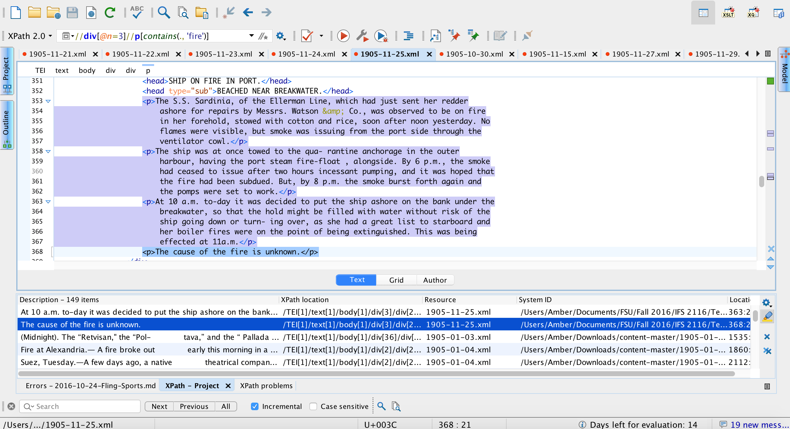

Serial Question:
How often did the Egyptian Gazette report fires in 1905? What were the causes of these fires? What methods where used to subdue these fires?
Personal Findings:
In my week of the Gazette I came across a ship that caught on fire. This report was found on page 3 of November 25,1905. The ship was full of cotton and rice when it was set aflame. Flames were not visible but smoke was 1pouring out from the vessel. The smoke calmed due to incessant pumping for about two hours. Soon after the ship fire seemed to be controlled, the smoke began again. Two hours later, it was decided that the ship was to be put ashore, on the bank in hopes that the hold would fill with water to subdue the fire. This did the trick and finally calmed the fire upon the ship. Oddly, the cause of the fire is reported as, “unknown.”
This section of the newspaper seems to report the most severe of fires. I am curious, as to what the other weeks of the Egyptian Gazette will have to offer about such fires. I wonder if the Gazette often lists the causes to these fires as “unknown”, as it did on page 3 of November 25, 1905.
Peer Data Visualization:
While searching through the pages of the Gazette, I found many references of fires in Alexandria. This includes:
On January 24,1905 in the General Strike at Moscow there was a fire at a Telephone Office. “Fire at Telephone Office.—At about 10 o’clock last night a fire broke out in the telephone central office at Kom el-Dik, which caused a complete interruption of the lines connected with this office. The Telephone Company inform us that they will re-establish communication as early as possible.” (Gazette).
On January 10,1905 in the Local and General section of the Gazette a Fire broke out in a shop. “The shop contains a store of chandeliers, lamps, etc., and there was also a considerable quantity of petroleum. It is the property of Count Jacques de Zogheb and was insured for £3,000. The cause is said to be due to a petroleum engine. There was a fire at the same shop three years ago, when it was completely gutted. The shopkeeper is a local subject, of the name of William Guttman. The alarm was given at 1.50 pm. and the engine was on the spot at 1.55 p.m. Owing to the petroleum the blaze and smoke were very great and it was two hours before the Brigade completely mastered it, although eight hoses were kept continually playing.” (Gazette).
On April 27,1905 a ship caught on fire in the canal. “This morning at dawn the S.S. “Candleshoe” arrived from the Canal having reported by wire from Station K. 64 the existence of a fire amongst the cargo in her No. 2 hold. On her arrival she was placed in the petroleum basin, which is situated some 2 kilometres from the town, and the necessary fire-extinguishing plant sent alongside. Throughout the day efforts were made to put the fire out by means of small quantities of water and other similar methods, with the idea of doing as little damage to the rest of the cargo as possible; but by 3 p.m. the fire had obtained such a hold that it was deemed neoessary, in order to save the ship, to flood the hold. The big fire float of the Canal Co., “Le Progres,” was already alongside, and she by means of her powerful pumps, had by 5.30 p.m. completely flooded the ‘tween decks, in which it was found the fire had done most damage. By sundown, gangs of Arabs were at work discharging the cargo, and the ship’s main pumps were at work pumping out the water.” (Gazette).
On May 27,1905 in the Local and General section of the Gazette a Fire “Fire at Zagazig.-On Thursday night a fire broke out in the house of Sadik Bey. Abaza, a notable of Zagazig. The furniture of the house was destroyed, but fortunately the confiagration did not reach the neighbouring houses, and the moudir and the commandant of the police succeeded in isolating the fire, the origin of which is unknown.” (Gazette).
On September 30,1905 in the Local and General section of the Gazette a Fire broke out in a house. “Fatal Fire at Gabbari.—At 5 a.m. today a fire broke out in the upper story of a house in the Gabbari quarter. The fire bri- gade sent off an engine at once on being called up, and were engaged in putting out the flames whom the occupant of the house, a merchant named Abd el Rahim Hassan, threw himself from a window without waiting or a fire escape or ladder to be put up and received such severe injuries that he expired while being conveyed to hospital. The flames were quickly extinguished, and an enquiry as to the origin of the fire and the amount of damage done, is proceeding.” (Gazette).
On November 14,1905 in the Coal Cargo on Fire section of the Gazette a Ship caught on fire. “Yesterday the S.S Westburn (Captain Bell), of the Weathall Line, of Sunderland, arrived at Alexandria from Barry Dock with a portion of her cargo on fire. She has a cargo of South Wales coal consigned to the firm of Rolo of Alexandria. On the 2nd November it was noticed that something was wrong with the cargo when the ship was off the Portuguese coast. Smoke was issuing from the ventilator, but the fire was kept under. The fire originated in No. 2 hold, where the small coal part of the cargo is stored, and it continued to smoulder all the voyage. The damage is not supposed to be very serious, but nothing is as yet ascertained. Neither the ship nor the cargo was insured.” (Gazette).
Conclusion:
I have found that fires were a common occurrence back in 1905. Most fires back in this time period were found on buildings and ships.
Research Reflection:
This class has been a tasking adventure into the unknown world of digital methods in Microhistory. This class has introduced to me: Microfilms, XML Coding and the how to use systems such as ATOM, Github, FineReader and Oxygen XML Editor. I’ve been certified in the most basic of computer programs such as word, excel, powerpoint, photoshop and indesign. This class broadened my sight on what computers are capable of.
The process of research itself, using digital methods in microhistory has had its ups and downs. The strengths of this process include being able to scan through historical documents and convert them into digitalized forms for easier use. This process allows easier access to our historical bases for any subject.
I would definitely say that the weaknesses of the research methods outweigh the strengths. The time consumption of these processes is the hardest to overcome. It can take over 2 hours to convert each page to text and convert the text to XML code. Another complex program that was asked of us to use was Github. It is also a difficult program to work with mainly because I have not ever used a program like it. I am slowly getting the hang of the program but I still love to check to make sure everything goes through correctly. This class is a very interesting class because it has shown me a whole new way to look through and record History. The technical aspect of the class is difficult, but the challenge is well worth it.
Querying was a whole new struggle for me. Since my final project is about the frequency of fires in this time period I decided the word I should focus in on is fire. At first I tried to search the class documents with //div[@type=”item”][contains(.,’fire’) and even, count(//div[contains(.,’fire’). Neither of these generated many results. After consultation with my professor, we found that the query that worked for my project was, //div[@n=3]//p[contains(., 'fire')]. This produced many results. The only negative of this query is that words such as ‘firework’ and ‘fired’ are still included in the search when I am mainly seeking fires.